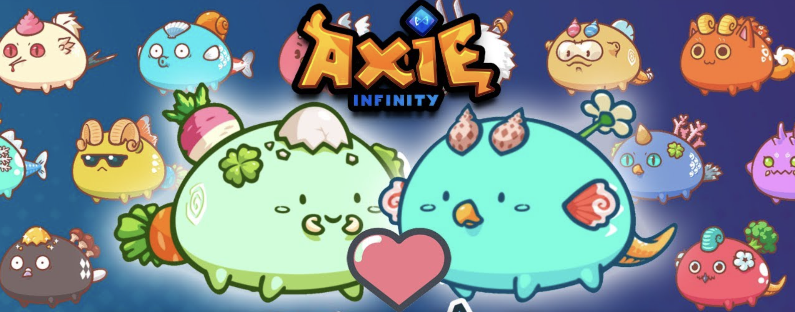

Aenean ornare velit lacus, ac varius enim lorem ullamcorper dolore aliquam.
Did you ever think that It is possible to make money just by playing a video game? Now that reality has even dawned, hands down to the proliferating play-to-earn global. This may sound like a sci-fi dreamed utopia, but the idea is to have players earn tokens and assets in the form of cryptocurrencies while navigating virtual worlds. P2E Web3 where digital ownership and decentralization are dethroning the traditional gaming landscape.
Let’s talk about Axie Infinity, created by the Vietnamese company Sky Mavis in 2018. A game with a forward-looking vision that differs from the conventional. Why is it different? Because it allows players to earn money. Axie Infinity revolves around adorable creatures called Axies. Imagine a game like Pokémon that rewards the best players with cryptocurrencies. Axies are unique NFTs that you can breed to enhance your teams or sell on the marketplace. To start playing Axie Infinity, you need three of these cute creatures. With your team ready, you will compete against other players in exciting battles, in addition to playing in adventure mode against the computer.
Before we continue, let’s pause to understand what NFTs are. These non-fungible tokens are digital assets that, unlike traditional cryptocurrencies like Bitcoin, do not have an equivalent value among themselves. Imagine each NFT as a piece of digital art or a super rare skin from your favorite video game. In Axie Infinity, each Axie has its own attributes that make it completely different from other Axies, such as special abilities and visual traits. All of this creates an economy around the Axies.
The mechanics of Axie Infinity are very simple yet addictive. While you play and fight massive battles, you get two types of tokens: SLP(Smooth Love Potion) & AXS(Axie Infinity Shards). SLP is earned through PvP battles and Adventure mode; AXS is awarded to the top season players, as well on other events. Where the real magic happens is when those tokens won in your victories are transmuted into actual currency, giving a fun layer an economic purpose.
The economy inside Axie Infinity operates as an ever-evolving organism. Breeding Axies gives each one unique traits, which are what determine their value in battle. Moreover, there is a scholarship program where players can lend their Axies to other player in return for a share of the profit. By doing this, players who can not afford the three Axies to initially purchase got a taste of the game, opening up access to this digital world.
The Axie Infinity breeding is a little genetic lab. When you breed 2 Axies, they will create a new Axie that has genes from each parent. These genes make up everything, from what types of attacks your Axie will have or how it looks when born anew. Choosing the right parents to breed an Axie is really important if you want to increase your chance of getting that trait from a certain body part. If you want say, an Axie that is going to regenerate and heal a lot so it's good in long games, then the parents need to be strong in carrying those dominant genes. Doing this will help you to gain more control over the situation and make better opportunities for breeding.
In summary, Axie Infinity is not just a game; it’s a change in how we see entertainment & the digital economy. With its play-to-earn model and clever economic system it has grabbed attention from folks all around the world. If you haven’t looked into this Axie universe yet, perhaps now’s the time to jump the adventure!
Not really. You need three Axies to start, but there are scholarships that let you play with borrowed accounts.
It depends on your skill and strategy. Some players can earn a good income, while others may earn less.
Yes, you can sell them in secondary markets for cryptocurrencies or real money.
You need at least three Axies to build a team and start your journey.
Aenean ornare velit lacus, ac varius enim lorem ullamcorper dolore aliquam.

Aenean ornare velit lacus, ac varius enim lorem ullamcorper dolore aliquam.

Aenean ornare velit lacus, ac varius enim lorem ullamcorper dolore aliquam.
Sed varius enim lorem ullamcorper dolore aliquam aenean ornare velit lacus, ac varius enim lorem ullamcorper dolore. Proin sed aliquam facilisis ante interdum. Sed nulla amet lorem feugiat tempus aliquam.